1060E40 supplementary pressure pump - r r
- Path
- Procedures > 10 ENGINE > 1060 DIESEL FUEL INJECTION > 1060E diesel pressure pump > 1060E40 supplementary pressure pump - r r
- Kind
- repair procedure (removal / refitting; the operation number is the code)
- Applies to
- engines: 1.9 JTD 8V, 1.9 JTD 16V; all production periods
- Interactive page
- https://sloeber94.github.io/elrnDB-a147/en/#/3025030
Applies to: engines: 1.9 JTD 8V; all production periods
 Removing
Removing
 Refitting
Refitting1016A10 sound-proofing cover - r + r
1008C10 power unit upper reaction link r r
1008C14 engine link bracket - r r
1060G80 ds electric injection control unit - r r
7055B54 under-engine guard - r r
7055B64 Engine compartment DUST shield in front wheel arch (one), left or right - R.R.
1092G10 single engine belt r r
1092A10 Crankshaft services PULLEY - R.R.
1032B10 toothed timing belt - r + r for timing adjustment or replacement
1084A16 oil dip stick pipe - r r
1060E30 pressure pump pulley - r r
Remove the intermediate driveshaft bearing mount. Carry out the relevant operation: 2710A35 intermediate drive shaft mount - r r .
1. Disconnect the vacuum pipes from the solenoid on the vacuum tank.
2. Disconnect the electrical connection from the solenoid on the vacuum tank.
 | Name | Connector |
|---|---|---|
2 | Butterfly casing solenoid valve |
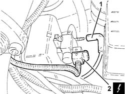
Applies to: engines: 1.9 JTD 8V; all production periods
1. Disconnect the remaining vacuum pipes from the vacuum tank.
2. Undo bolts (2a) and remove vacuum tank (2b) complete with solenoid (2c).
Remove the vacuum tank mounting bracket.
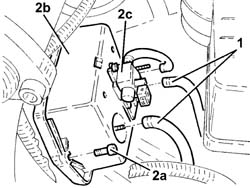
Applies to: engines: 1.9 JTD 8V; all production periods
1. Undo the nut (1a) and bolt (1b) and remove the power unit rear rigid mount (1c).
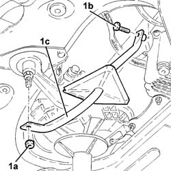
Applies to: engines: 1.9 JTD 8V; all production periods
1. Unscrew the retaining bolts
2. Remove the alternator from its seat.
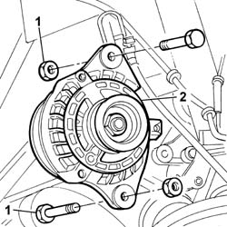
Applies to: engines: 1.9 JTD 8V; all production periods
1. Disconnect the electrical connection from the engine oil pressure warning light switch.
| Name | Connector |
|---|---|---|
1 | Engine oil pressure sensor |
2. Remove the engine oil pressure warning light switch
3. Undo the bolts securing the pressure pump mounting to the cylinder block.
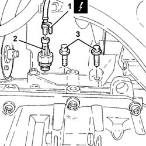
Applies to: engines: 1.9 JTD 8V; all production periods
Lower the vehicle.
1. Undo the bolts securing the mounting to the crankcase.
2. Undo bolts retaining the mount to the cylinder head.
3. Remove the pressure pump mounting.Undo
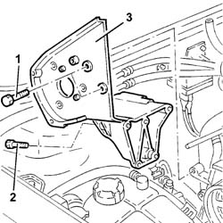
Applies to: engines: 1.9 JTD 8V; all production periods
Refitting
RemovingFit the pressure pump mount.
Tighten the bolts retaining the mount to the cylinder head.
 | Fastening | Component | Ø | Value (daNm) |
|---|---|---|---|---|
- | Bolt | INJECTION PRESSURE PUMP MOUNT | M8 | (Crankcase side) 2.6 ÷ 3.2 |
| Fastening | Component | Ø | Value (daNm) |
|---|---|---|---|---|
- | Bolt | INJECTION PRESSURE PUMP MOUNT | M6 | (Manifold side) 2.1 ÷ 2.6 |
Fit the engine oil pressure warning light switch.
Connect the electrical connection to the engine oil pressure warning light switch.
| Name | Connector |
|---|---|---|
- | Engine oil pressure sensor |
Refit the alternator into its housing and tighten the retaining screws
Place the rigid rear support for the power unit back in its housing using the hydraulic jack.
Tighten the bolt securing the rigid rear power unit support to the flexible mounting to the recommended torque.
Fit the vacuum tank mounting bracket.
Fit the vacuum tank complete with solenoid.
Connect the vacuum pipes to the vacuum tank.
Connect the electrical connection to the solenoid on the vacuum tank.
| Name | Connector |
|---|---|---|
- | Butterfly casing solenoid valve |
Connect the vacuum pipe to the solenoid on the vacuum tank.
Refit the intermediate driveshaft bearing mount. carry out the relevant operation: 2710A35 intermediate drive shaft mount - r r .
1060E30 pressure pump pulley - r r
1084A16 oil dip stick pipe - r r
1032B10 toothed timing belt - r + r for timing adjustment or replacement
1092A10 Crankshaft services PULLEY - R.R.
1092G10 single engine belt r r
7055B64 Engine compartment DUST shield in front wheel arch (one), left or right - R.R.
7055B54 under-engine guard - r r
1060G80 ds electric injection control unit - r r
1008C14 engine link bracket - r r
Applies to: engines: 1.9 JTD 16V; all production periods
Removing
RefittingPosition the vehicle on the ramp.
Proceed with removal 1016A10 sound-proofing cover - r + r .
Ensure that the ignition key is in the OFF position, then disconnect the negative battery terminal (-).
| Name | Connector |
|---|---|---|
- | Battery |
Proceed with removal 1008C10 power unit upper reaction link r r .
Proceed with removal 1060G80 ds electric injection control unit - r r .
Proceed with removal 4450B04 right front wheel r r .
Proceed with removal 7055B54 under-engine guard - r r .
Proceed with removal 7055B91 Right front WHEEL ARCH LINER - R.R. .
Proceed with removal 1092G10 single engine belt r r .
Proceed with removal 1092A10 Crankshaft services PULLEY - R.R. .
Proceed with removal 1092G20 engine component single belt fixed tensioner - one - r + r .
Proceed with removal 1032D12 timing system protective cover(s) - r + r .
Proceed with removal 1032B10 toothed timing belt - r + r for timing adjustment or replacement .
Proceed with removal 1060E10 pressure pump - r r .
1. Disconnect the electrical connections from the heater plugs.
| Name | Connector |
|---|---|---|
1 | Heater plug |
2. Release the electrical wiring from the bands and move it.
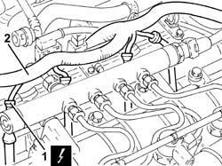
Applies to: engines: 1.9 JTD 16V; all production periods
1. Loosen the band and disconnect the coolant return pipe from the engine coolant reservoir, thermostat side.
2. Loosen the band and disconnect the coolant outlet pipe from the cylinder head, engine coolant return pipe to the coolant reservoir side.
3. Loosen the band and disconnect the flexible coolant return pipe from the rigid coolant return pipe to the engine coolant reservoir.
4. Undo the bolts (4a) and remove hose (4b) carrying coolant to the coolant supply reservoir.
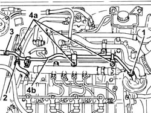
Applies to: engines: 1.9 JTD 16V; all production periods
1. Undo the bolts (1a) and remove the power steering pump drive pulley (1b).
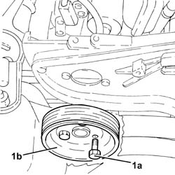
Applies to: engines: 1.9 JTD 16V; all production periods
1. Undo the bolts securing the power steering pump to its mounting.
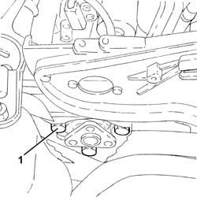
Applies to: engines: 1.9 JTD 16V; all production periods
Remove the guide tube complete with engine oil dipstick.
1. Undo the bolts (1a) and remove the pressure pump mounting (1b).
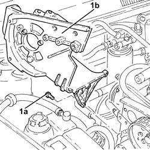
Applies to: engines: 1.9 JTD 16V; all production periods
Refitting
Removing1. Place the pressure pump mounting (1a) back in its housing and fix it tightening the bolts (1b) to the recommended torque.
| Fastening | Component | Ø | Value (daNm) |
|---|---|---|---|---|
1b | Bolt | INJECTION PRESSURE PUMP MOUNT | M8 | (Engine crankcase side) 2.3 ÷ 2.8 |
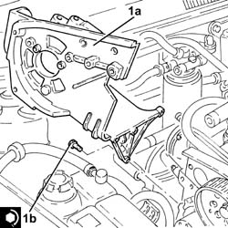
Applies to: engines: 1.9 JTD 16V; all production periods
Refit the guide tube and engine oil dipstick.
1. Place the power assisted steering pump back in its housing and fix it tightening the bolts to the recommended torque.
| Fastening | Component | Ø | Value (daNm) |
|---|---|---|---|---|
1 | Bolt | SINGLE SERVICES MOBILE BELT TENSIONER | - | (Engine crankcase side) 2.7 ÷ 3.3 |
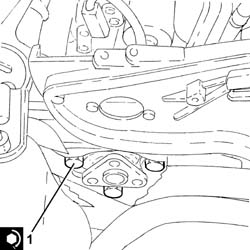
Applies to: engines: 1.9 JTD 16V; all production periods
1. Place the power assisted steering pump pulley (1a) back in its housing and fix it tightening the bolts (1b) to the recommended torque.
| Fastening | Component | Ø | Value (daNm) |
|---|---|---|---|---|
1b | Bolt | POWER STEERING PUMP DRIVE PULLEY | M8 | (Power assisted steering pump side) 2.3 ÷ 2.8 |
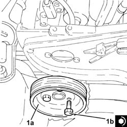
Applies to: engines: 1.9 JTD 16V; all production periods
Place the coolant return pipe to the engine cooling system reservoir back in its housing and fix it using the bolts.
Connect the flexible pipe to the coolant return pipe to the engine coolant reservoir and tighten the band.
Connect the coolant oulet pipe from the cylinder head, engine coolant return pipe to the supply reservoir side and tighten the band.
Connect the engine coolant return pipe to the supply reservoir, thermostat side and tighten the band.
Place the electrical wiring back in its seating and fix it to the bands.
Connect the electrical connections to the heater plugs.
Proceed with refitting 1060E10 pressure pump - r r .
Proceed with refitting 1032B10 toothed timing belt - r + r for timing adjustment or replacement .
Proceed with refitting 1032D12 timing system protective cover(s) - r + r .
Proceed with refitting 1092G20 engine component single belt fixed tensioner - one - r + r .
Proceed with refitting 1092A10 Crankshaft services PULLEY - R.R. .
Proceed with refitting 1092G10 single engine belt r r .
Proceed with refitting 7055B91 Right front WHEEL ARCH LINER - R.R. .
Proceed with refitting 7055B54 under-engine guard - r r .
Proceed with refitting 4450B04 right front wheel r r .
Proceed with refitting 1060G80 ds electric injection control unit - r r .
Proceed with refitting 1008C10 power unit upper reaction link r r .
Connect the negative (-) battery terminal
Proceed with refitting 1016A10 sound-proofing cover - r + r .
Proceed with refitting 7025A14 Bonnet LID - R.R. .
Proceed with refitting 7025A12 Engine front sound insulation COVER - R.R. .
Remove the car from the ramps.
Topics linked from this page (23)
- 1008C10 power unit upper reaction link r r
- 1008C14 engine link bracket - r r
- 1016A10 sound-proofing cover - r + r
- 1032B10 toothed timing belt - r + r for timing adjustment or replacement
- 1032D12 timing system protective cover(s) - r + r
- 1060E10 pressure pump - r r
- 1060E30 pressure pump pulley - r r
- 1060G80 ds electric injection control unit - r r
- 1084A16 oil dip stick pipe - r r
- 1092A10 Crankshaft services PULLEY - R.R.
- 1092G10 single engine belt r r
- 1092G20 engine component single belt fixed tensioner - one - r + r
- 2710A35 intermediate drive shaft mount - r r
- 4450B04 right front wheel r r
- 7025A12 Engine front sound insulation COVER - R.R.
- 7025A14 Bonnet LID - R.R.
- 7055B54 under-engine guard - r r
- 7055B64 Engine compartment DUST shield in front wheel arch (one), left or right - R.R.
- 7055B91 Right front WHEEL ARCH LINER - R.R.
- A1B Battery ( Connectors )
- A40 Heater plug
- K30 Engine oil pressure sensor (switch)
- L62 Butterfly casing solenoid valve